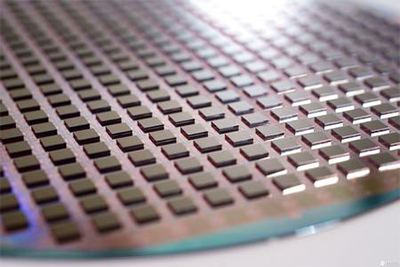

光功能材料合成与应用

光功能材料（optical function materials）指在外场（电、光、磁、热、声、力等）作用下，利用材料本身光学性质（如折射率或感应电极化）发生变化的原理，去实现对入射光信号的探测、调制以及能量或频率转换作用的光学材料的统称。按照具体作用机理或应用目的之不同，尚可把光功能材料进一步区分为电光材料、磁光材料、弹光材料、声光材料、热光材料、非线性光学材料以及激光材料等多种。
分子探针与生物成像
分子探针是指能精准回答生物医学问题的功能性物质。分子探针是实现分子成像的先决条件和核心技术。分子影像技术的发展除了需要先进的成像设备外，还需要发展新型而高效的分子探针。分子探针种类繁多，根据成像设备的不同，分子探针分为光学、核医学、磁学、声学、光声等不同种类。